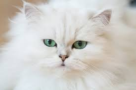

Le Persan, aussi doux qu’une peluche, fait partie des races de chat les plus populaires. Ce chat appelé Gorbe-ye irāni, « chat iranien » en Iran, l’actuelle Perse, fait partie des races de chat les plus anciennes. Cependant, les chats Persans tels que nous les connaissons aujourd’hui ne sont plus originaires d’Orient.
Revenir Accueil